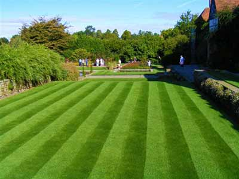
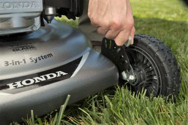

Striping
Lawn stripes are seen by bending the grass into different directions with your mower. It is basically light reflecting off the grass blades, which are bent in opposite directions. Grass bent toward you look dark and away from you look lighter. Mowing your lawn and striping it is actually good for your grass.
Regular Cut
Our mowers have a range of grass cutting heights so if you have a specific height that you often have your lawn trimmed to then we will be happy to do that, if this is a first time we can survey the grass and determine what would be the best cut height for your garden.
Do you have a question about any of our services?
Contact Us At
Telephone: 07234632274
Email: freshstrims@mail.com
63 Gee St
London
EC1V 3RS